微信公众号[深容Pubmed文献检索] 1. 此处右键：选菜单【翻成中文（简体）】 2. 翻译后，此处右键：选菜单【打印...】成PDF格式
建议屏幕分辨率：1920X1080；如果屏幕太小，可以按Ctrl + 或 Ctrl -缩放网页。

Software Construction
Chapter 6: Maintainability-Oriented Software
Construction Approaches
6.3 Maintainability-Oriented
Construction Techniques
Xu Hanchuan
xhc@hit.edu.cn
April 22, 2019

Outline
6.3 Maintainability-Oriented Construction Techniques
▪ Grammar-based construction
– Regular Expression (regex)
– Interpreter pattern implements a specialized language.
▪ State-based construction
– Automata-based programming
– State pattern allows an object to alter its behavior when its internal state
changes.
– Memento pattern provides the ability to restore an object to its previous
state (undo).
▪ Table-driven construction

Software Construction
1 Grammar-based construction
6.3 Maintainability-Oriented Construction Techniques
Objective of Grammar-based Construction
▪ Understand the ideas of grammar productions and regular
expression operators 理解语法产生式和正则表达式的概念，能够阅
读和书写语法或正则表达式
▪ Be able to read a grammar or regular expression and determine
whether it matches a sequence of characters
▪ Be able to write a grammar or regular expression to match a set of
character sequences and parse them into a data structure
▪ Be able to use a grammar in combination with a parser generator, to
parse a character sequence into a parse tree 能够将语法和解析器生成
器相结合，解析字符串
▪ Be able to convert a parse tree into a useful data type
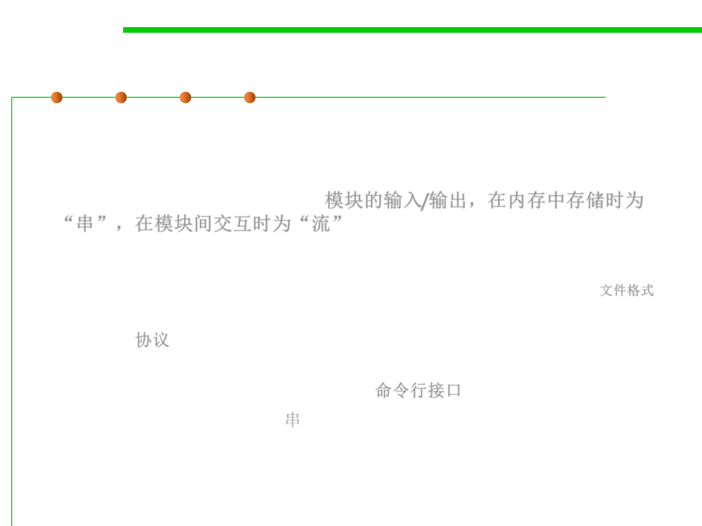
6.3 Maintainability-Oriented Construction Techniques
String/Stream based I/O
▪ Some program modules take input or produce output in the form
of a sequence of bytes or a sequence of characters, which is called
a string when it’s simply stored in memory, or a stream when it
flows into or out of a module. 模块的输入/输出，在内存中存储时为
“串”，在模块间交互时为“流”
▪ Concretely, a sequence of bytes or characters might be:
– A file on disk, in which case the specification is called the file format 文件格式
– Messages sent over a network, in which case the specification is a wire
protocol 协议
– A command typed by the user on the console, in which case the
specification is a command line interface 命令行接口
– A string stored in memory 串
6.3 Maintainability-Oriented Construction Techniques
The notion of a grammar
▪ For these kinds of sequences, the notion of a grammar is a good
choice for design:
– It can not only help to distinguish between legal and illegal sequences, but
also to parse a sequence into a data structure a program can work with.
– The data structure produced from a grammar will often be a recursive
data type. 语法用于判断合法性，及将字符/字节序列解析为特定数据结构
▪ A specialized form of a grammar called a regular expression.
– It is a widely-used tool for many string-processing tasks that need to
disassemble a string, extract information from it, or transform it. 正则表达
式用于处理字符串，进行拆分、信息提取和转换
▪ A parser generator is a kind of tool that translate a grammar
automatically into a parser for that grammar. 解析器生成器根据语法
生成解析器，解析器用于解析字符串

Software Construction
(1) Constituents of a Grammar

6.3 Maintainability-Oriented Construction Techniques
Terminals: Literal Strings in a Grammar
▪ To describe a string of symbols, whether they are bytes, characters,
or some other kind of symbol drawn from a fixed set, we use a
compact representation called a grammar.
▪ A grammar defines a set of strings.
– For example, the grammar for URLs will specify the set of strings that are
legal URLs in the HTTP protocol.
▪ The literal strings in a grammar are called terminals.终结符/终止符
– They’re called terminals because they are the leaves of a parse tree that
represents the structure of the string.
– They don’t have any children, and can’t be expanded any further.
– We generally write terminals in quotes, like 'http' or ':'.
url ::= 'http://' hostname '/'
hostname ::= 'mit.edu' | 'stanford.edu' | 'google.com'
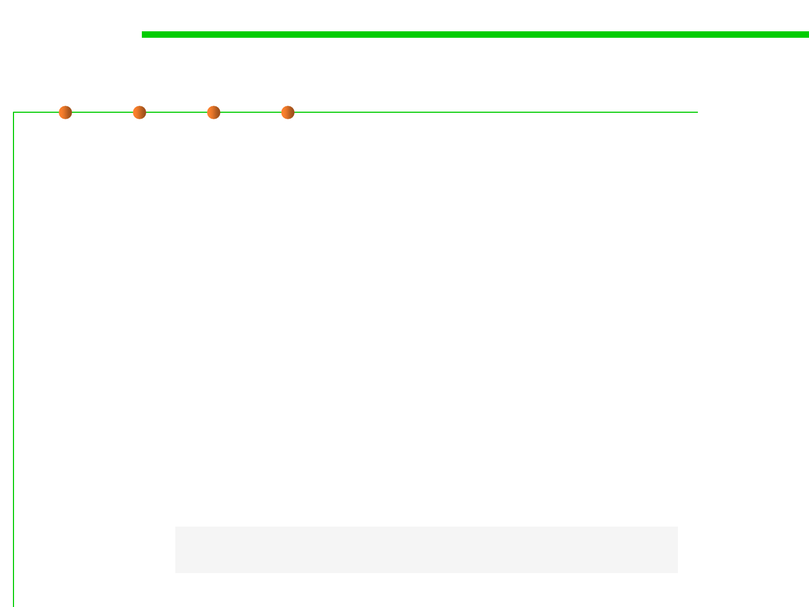
6.3 Maintainability-Oriented Construction Techniques
Nonterminals and Productions in a Grammer
▪ A grammar is described by a set of productions(产生式), where
each production defines a nonterminal(非终结符).
– A nonterminal is like a variable that stands for a set of strings, and the
production as the definition of that variable in terms of other variables
(nonterminals), operators, and constants (terminals).
– Nonterminals are internal nodes of the tree representing a string.
▪ A production in a grammar has the form
– nonterminal ::= expression of terminals, nonterminals, and operators
▪ One of the nonterminals of the grammar is designated as the root.
– The set of strings that the grammar recognizes are the ones that match the
root nonterminal.
– This nonterminal is often called root or start.
url ::= 'http://' hostname '/'
hostname ::= 'mit.edu' | 'stanford.edu' | 'google.com'

Software Construction
(2) Operators in a Grammar

6.3 Maintainability-Oriented Construction Techniques
Three Basic Grammar Operators
▪ The three most important operators in a production expression are:
– Concatenation(连接), represented not by a symbol, but just a space:
x ::= y z an x is a y followed by a z
– Repetition(重复), represented by *:
x ::= y*
an x is zero or more y
– Union(合并), also called alternation, represented by |:
x ::= y | z
an x is a y or a z

6.3 Maintainability-Oriented Construction Techniques
Combinations of three basic operators
▪ Additional operators are just syntactic sugar (i.e., they’re
equivalent to combinations of the big three operators):
– Optional (0 or 1 occurrence), represented by ?:
x ::= y?
an x is a y or is the empty string
– 1 or more occurrences: represented by +:
x ::= y+
an x is one or more y
(equivalent to x ::= y y* )
– A character class [...], representing the length-1 strings containing any of
the characters listed in the square brackets:
x ::= [abc] is equivalent to x ::= 'a' | 'b' | 'c‘
– An inverted character class [^...], representing the length-1 strings
containing any character not listed in the brackets:
x ::= [^abc] is equivalent to x ::= 'd' | 'e' | 'f' | ...
(all other characters in Unicode)

6.3 Maintainability-Oriented Construction Techniques
Grouping operators using parentheses
▪ By convention, the postfix operators *, ?, and + have highest
precedence, which means they are applied first.
▪ Concatenation is applied next.
▪ Alternation | has lowest precedence, which means it is applied
last.
▪ Parentheses can be used to override precedence:
– x ::= (y z | a b)* an x is zero or more “yz” or “ab” pairs
– m ::= a (b|c) d an m is a, followed by either b or c, followed by d

Software Construction
(3) Example 1: URL

URL as an example
6.3 Maintainability-Oriented Construction Techniques
▪ To write a grammar that represents URLs.
▪ Here’s a simple URL:
http://mit.edu/
▪ A grammar that represents the set of strings containing only this
URL would look like:
url ::= 'http://mit.edu/'
▪ But let’s generalize it to capture other domains, as well:
http://stanford.edu/
http://google.com/
▪ We can write this as one line, like this:
url ::= 'http://' [a-z]+ '.' [a-z]+ '/'

URL as an example
6.3 Maintainability-Oriented Construction Techniques
url ::= 'http://' [a-z]+ '.' [a-z]+ '/'
▪ This grammar represents the set of all URLs that consist of just a
two-part hostname, where each part of the hostname consists of 1
or more letters.
▪ So http://mit.edu/ and http://yahoo.com/ would match, but
not http://ou812.com/
▪ Since it has only one nonterminal, a parse tree for this URL
grammar would look like this:
▪ In this one-line form, with a single nonterminal whose production
uses only operators and terminals, a grammar is called a regular
expression. 产生式中如果只有终结符和操作符，则称为正则表达式
6.3 Maintainability-Oriented Construction Techniques
Grammars with multiple nonterminals
▪ It will be easier to understand if we name
the parts using new nonterminals:
url ::= 'http://' hostname '/'
hostname ::= word '.' word
word ::= [a-z]+
▪ The leaves of the tree are the parts of the
string that have been parsed.
– Concatenating the leaves together, we would recover the original string.
– The hostname and word nonterminals are labeling nodes of the tree
whose subtrees match those rules in the grammar.
– The immediate children of a nonterminal node like hostname follow the
pattern of the hostname rule, word '.' word.
6.3 Maintainability-Oriented Construction Techniques
Again generalizing…
▪ Hostnames can have more than two components, and there can be
an optional port number:
http://didit.csail.mit.edu:4949/
▪ To handle this kind of string, the grammar is now:
url ::= 'http://' hostname (':' port)? '/'
hostname ::= word '.' hostname | word '.' word
port ::= [0-9]+
word ::= [a-z]+
▪ hostname is now defined recursively
in terms of itself.
▪ Another way:
hostname ::= (word '.')+ word

6.3 Maintainability-Oriented Construction Techniques
More generalizations…
▪ There are more things we should do to go farther:
– Generalizing http to support the additional protocols that URLs can have
– Generalizing the / at the end to a slash-separated path
– Allowing hostnames with the full set of legal characters instead of just a-z
▪ Can you do these?

Software Construction
(4) Example 2: Markdown and
HTML
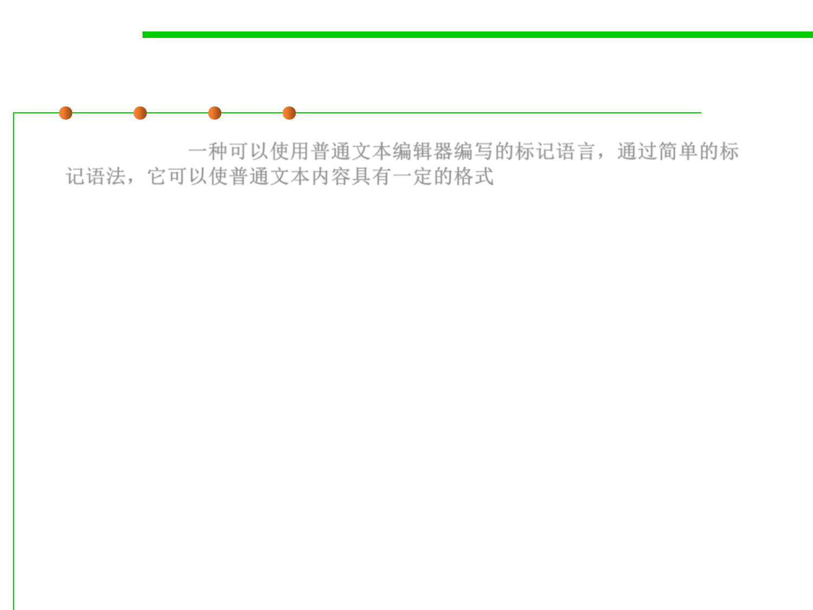
6.3 Maintainability-Oriented Construction Techniques
Markdown and HTML
▪ Markdown(一种可以使用普通文本编辑器编写的标记语言，通过简单的标
记语法，它可以使普通文本内容具有一定的格式)
This is _italic_.
▪ HTML
Here is an <i>italic</i> word.
▪ For simplicity, these HTML and Markdown grammars will only
specify italics, but other text styles are of course possible.
▪ For simplicity, we will assume the plain text between the
formatting delimiters isn’t allowed to use any formatting
punctuation, like _ or <.

6.3 Maintainability-Oriented Construction Techniques
Markdown and HTML
markdown ::= ( normal | italic ) *
italic ::= '_' normal '_'
normal ::= text
text ::= [^_]*
html ::= ( normal | italic ) *
italic ::= '<i>' html '</i>'
normal ::= text
text ::= [^<>]*

Software Construction
(5) Regular Grammars and Regular
Expressions
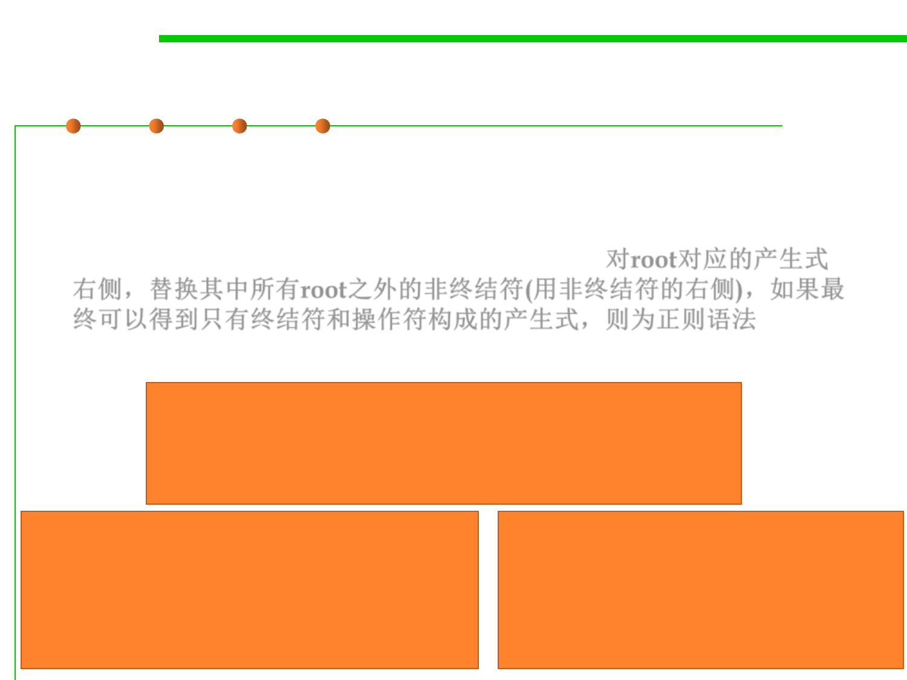
Regular grammar
6.3 Maintainability-Oriented Construction Techniques
▪ A regular grammar正则文法 has a special property: by substituting
every nonterminal (except the root one) with its righthand side, you
can reduce it down to a single production for the root, with only
terminals and operators on the right-hand side. 对root对应的产生式
右侧，替换其中所有root之外的非终结符(用非终结符的右侧)，如果最
终可以得到只有终结符和操作符构成的产生式，则为正则语法
▪ Which of them are regular grammars?
url ::= 'http://' hostname (':' port)? '/'
hostname ::= word '.' hostname | word '.' word
port ::= [0-9]+
word ::= [a-z]+
markdown ::= ( normal | italic ) *
italic ::= '_' normal '_'
normal ::= text
text ::= [^_]*
html ::= ( normal | italic ) *
italic ::= '<i>' html '</i>'
normal ::= text
text ::= [^<>]*


Regular grammar
6.3 Maintainability-Oriented Construction Techniques
url ::= 'http://' ([a-z]+ '.')+ [a-z]+ (':' [0-9]+)? '/'
Regular!
markdown ::= ([^_]* | '_' [^_]* '_' )*
Regular!
html ::= ( [^<>]* | '<i>' html '</i>' )*
Not regular!
6.3 Maintainability-Oriented Construction Techniques
Regular Expressions (regex)
▪ The reduced expression of terminals and operators can be written
in an even more compact form, called a regular expression.
▪ A regular expression does away with the quotes around the
terminals, and the spaces between terminals and operators, so that
it consists just of terminal characters, parentheses for grouping,
and operator characters.
markdown ::= ([^_]* | '_' [^_]* '_' )*
markdown ::= ([^_]*|_[^_]*_)*
▪ Regular expressions are also called regex for short.
– A regex is far less readable than the original grammar, because it lacks
the nonterminal names that documented the meaning of each
subexpression. 正则表达式可读性不如原始语法
– But a regex is fast to implement, and there are libraries in many
programming languages that support regular expressions. 易于实现

6.3 Maintainability-Oriented Construction Techniques
Some special operators in regex
▪ . any single character
▪ \d any digit, same as [0-9]
▪ \s any whitespace character, including space, tab, newline
▪ \w any word character, including letters and digits
▪ \., \(, \), \*, \+, ...
backslach escapes an operator or special character so that it matches
literally

An example
6.3 Maintainability-Oriented Construction Techniques
▪ Original:
'http://' ([a-z]+ '.')+ [a-z]+ (':' [0-9]+)? '/'
▪ Compact:
http://([a-z]+.)+[a-z]+(:[0-9]+)?/
▪ With escape:
http://([a-z]+\.)+[a-z]+(:[0-9]+)?/

Software Construction
(6) Using regular expressions in Java

6.3 Maintainability-Oriented Construction Techniques
Using regular expressions in Java
▪ Regex is very useful in programming languages.
– In Java, you can use regexes for manipulating strings (see String.split,
String.matches, java.util.regex.Pattern).
– They’re built-in as a first-class feature of modern scripting languages like
Python, Ruby, and Javascript, and you can use them in many text editors
for find and replace.
▪ Replace all runs of spaces with a single space:
public String replaceAll(String regex, String replacement)
String singleSpacedString = string.replaceAll(" +", " ");
▪ Match a URL:
Pattern regex =
Pattern.compile("http://([a-z]+\\.)+[a-z]+(:[0-9]+)?/");
Matcher m = regex.matcher(string);
if (m.matches()) { // then string is a url }

6.3 Maintainability-Oriented Construction Techniques
Using regular expressions in Java
▪ Extract part of an HTML tag:
Pattern regex = Pattern.compile("<a href=\"([^\"]*)\">");
Matcher m = regex.matcher(string);
if (m.matches()) {
String url = m.group(1);
// Matcher.group(n) returns the nth parenthesized part of
// the regex
}
▪ The frequency of backslash escapes makes regexes still less
readable!!!

An example
6.3 Maintainability-Oriented Construction Techniques
▪ Write the shortest regex you can to remove single-word, lowercase-
letter-only HTML tags from a string:
String input = "The <b>Good</b>, the <i>Bad</i>, and the
<strong>Ugly</strong>";
String regex = "TODO";
String output = input.replaceAll(regex, “”); //去掉所有的TODO
▪ If the desired output is "The Good, the Bad, and the Ugly", what is
shortest regex you can put in place of TODO?
regex=</?[a-z]+>

6.3 Maintainability-Oriented Construction Techniques
Context-Free Grammars 上下文无关文法
▪ In general, a language that can be expressed with our system of
grammars is called context-free. 注：上下文无关文法左侧只含有一个
非终结符，它定义的语法范畴（或语法单位）是完全独立于这种范畴
可能出现的环境，无需考虑上下文。
– Not all context-free languages are also regular; that is, some grammars
can’t be reduced to single nonrecursive productions. 不是所有CFG都是正
则的。
– The HTML grammar is context-free but not regular.
▪ The grammars for most programming languages are also context-
free. 程序设计语言的语法多数都是CFG
▪ In general, any language with nested structure嵌套结构 (like nesting
parentheses or braces) is context-free but not regular.
Java grammar
6.3 Maintainability-Oriented Construction Techniques

Software Construction
(7) Parsers

Parser
6.3 Maintainability-Oriented Construction Techniques
▪ A parser takes a sequence of characters and tries to match the
sequence against the grammar.
▪ The parser typically produces a parse tree, which shows how
grammar productions are expanded into a sentence that matches
the character sequence.
– The root of the parse tree is the starting nonterminal of the grammar.
– Each node of the parse tree expands into one production of the grammar.
▪ A recursive abstract data type that represents a language
expression is called an abstract syntax tree (AST).

Parser Generator
6.3 Maintainability-Oriented Construction Techniques
▪ A parser generator is a tool that reads a grammar specification and
converts it to a Java program that can recognize matches to the
grammar. 根据语法定义生成parser
– Read http://web.mit.edu/6.031/www/sp17/classes/18-parsers
This is not the mandatory contents of this course.
▪ More broadly:
– A parser generator is a programming tool that creates a parser, interpreter,
or compiler from some form of formal description of a language.
– The input may be a text file containing the grammar written in BNF or
EBNF that defines the syntax of a programming language.
– The output is some source code of the parser for the grammar.
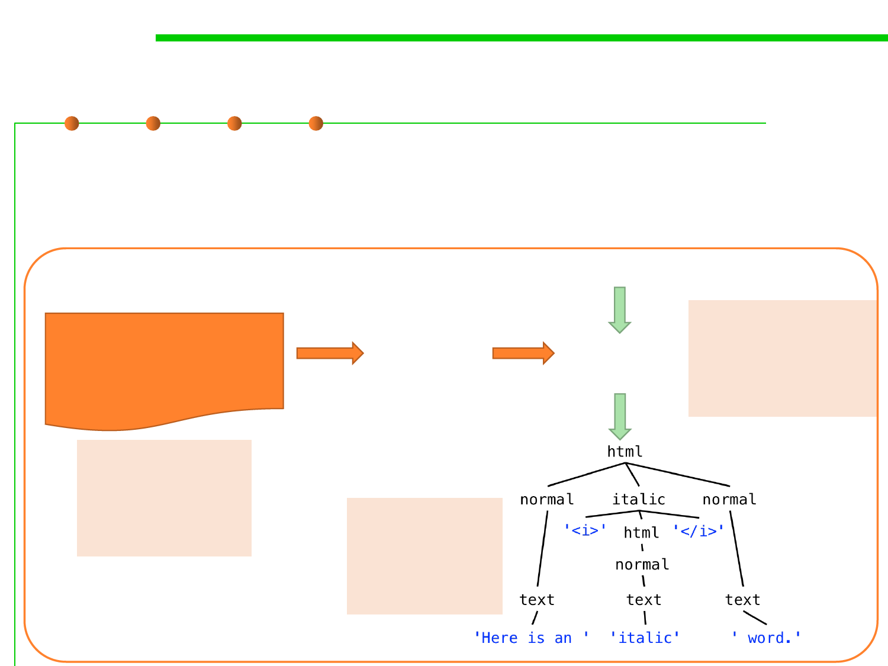
6.3 Maintainability-Oriented Construction Techniques
Grammar, Parser Generator, and Parser
▪ Grammar定义语法规则，Parser generator根据grammar定义的规则
产生一个parser，client利用parser来解析文本，看其是否符合语法定
义并对其做各种处理（例如转成parse tree）
Grammar
root ::= html;
html ::= ( italic | normal ) *;
italic ::= '<i>' html '</i>';
normal ::= text;
text ::= [^<>]+;
Here is an <i>italic</i> word.
Parser
Generator
(Tool)
例如：
Parser Java regex parser
(API or tool) HTML parser
Java compiler
例如：
正则表达式语法
HTML语法
Java语法
例如：
Regex pattern
HTML tree
Java AST

Interpreter Pattern
6.3 Maintainability-Oriented Construction Techniques
▪ The Interpreter Design Pattern allows you to build the rules as
classes. 解析器设计模式允许将规则定义为类
▪ Intent
– Given a language, define a representation for its grammar along with an
interpreter that uses the representation to interpret sentences in the
language.
▪ Applicability
– The grammar is simple. They can interpret expressions without building
abstract syntax trees, which can save space and possibly time. 适用于简单
语法情况，此模式不采用AST的方式解析表达式，节省空间和时间。
– Efficiency is not a critical concern. The most efficient interpreters are
usually not implemented by interpreting parse trees directly but by first
translating them into another form. But even then, the translator can be
implemented by the Interpreter pattern, so the pattern is still applicable.
Interpreter Pattern
6.3 Maintainability-Oriented Construction Techniques
▪ AbstractExpression (RegularExpression)
– declares an abstract Interpret operation that is common to all nodes in the
abstract syntax tree.
▪ TerminalExpression (LiteralExpression)
– implements an Interpret operation associated with terminal symbols in the
grammar.
– an instance is required for every terminal symbol in a sentence.
Interpreter Pattern
6.3 Maintainability-Oriented Construction Techniques
▪ NonterminalExpression
▪ Context
– contains information that‘s global to the interpreter. 包含所有解析器的全
局信息
▪ Client
– builds (or is given) an abstract syntax tree representing a particular
sentence in the language that the grammar defines. The abstract syntax
tree is assembled from instances of the NonterminalExpression and
TerminalExpression classes.
– invokes the Interpret operation.

6.3 Maintainability-Oriented Construction Techniques
Interpreter vs. grammar + parser
▪ Grammar + Parser
– Grammar由BNF等形式定义
– Parser读取用户输入的待解析的文本，判定其是否与grammar匹配，并转为
符合grammar的parse tree，交给其他功能做后续处理
– 可用于高度复杂的grammar rules
▪ Interpreter pattern
– Grammar由程序员手工定义为一组interface/class及其之间的关系，对
grammar的解释（即parser）由这组class的内部操作(Interpret())负责
– 每条语法规则(production)都要定义相应的类——相当于开发一个简单的
parser
– 用户使用的时候，调用这组类完成对输入文本的解释（这里的“解释”，其
实相当于“翻译”）
– 只适用于简单的grammar rules，过于复杂的grammar就需要引入大量的类

Software Construction
2 State-based construction

6.3 Maintainability-Oriented Construction Techniques
State-based programming
▪ State-based programming is a programming technology using finite
state machines (FSM有限状态机) to describe program behaviors, i.e.,
the use of “states” to control the flow of your program. 通过状态控制
程序流程
▪ For example, in the case of an elevator, it could be moving up, moving
down, stopping, closing the doors, and opening the doors.
▪ Each of these are considered a state, and what happens next is
determined by the elevator’s current state.
– If the elevator has just closed its doors, what are the possibilities that can
happen next? It can either move up, or move down. You wouldn’t expect the
elevator to stop after closing its doors.
– When an elevator stops, you expect the next action to be the door’s opening.
The code
6.3 Maintainability-Oriented Construction Techniques

Software Construction
(1) Automata-based programming
基于自动机的编程
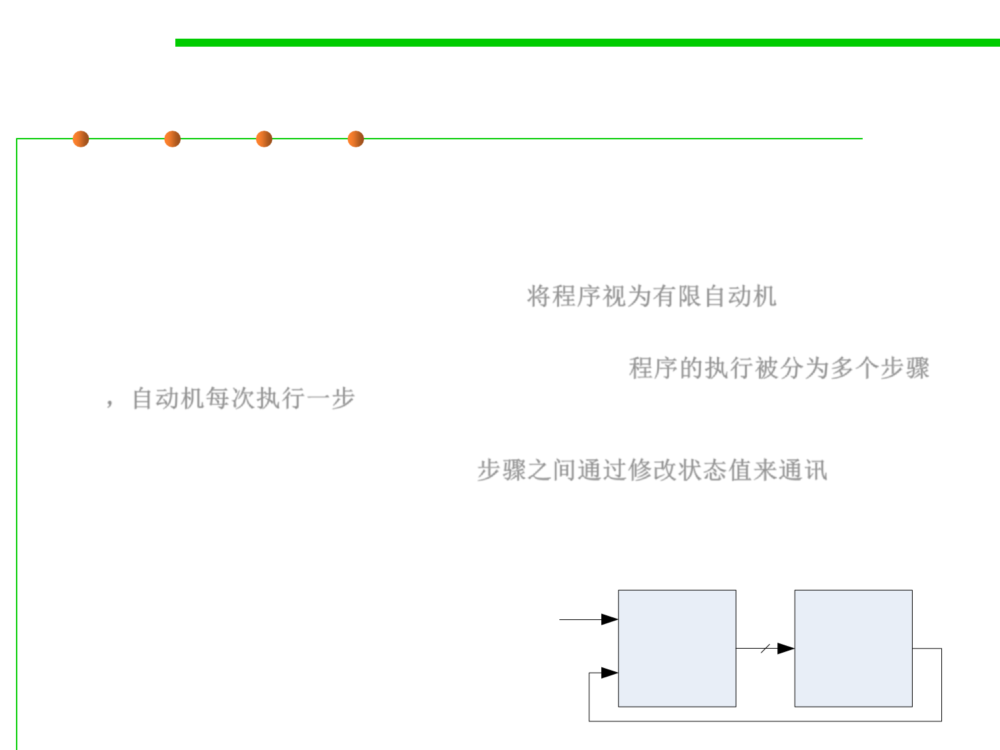
6.3 Maintainability-Oriented Construction Techniques
Automata-based programming
▪ Automata-based programming is a programming paradigm in
which the program or part of it is thought of as a model of a finite
state machine (FSM) or any other formal automaton.
– Treat a program as a finite automata. 将程序视为有限自动机
– Each automaton can take one “step” at a time, and the execution of the
program is broken down into individual steps. 程序的执行被分为多个步骤
，自动机每次执行一步
– The steps communicate with each other by changing the value of a
variable representing “the state“. 步骤之间通过修改状态值来通讯
– Control flow of the program is determined by the value of that variable.
▪ Application design approach should be similar to the design of
control systems (Automata System). E, X2
Control
System
Z
Controlled X1
Object
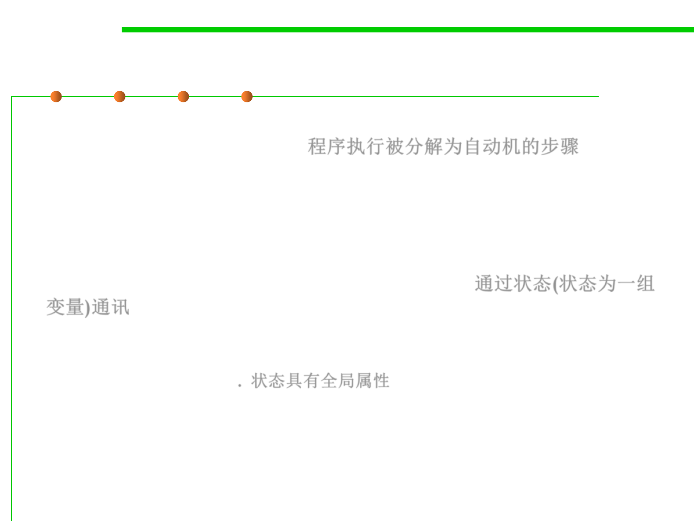
6.3 Maintainability-Oriented Construction Techniques
Automata-based programming
▪ The time period of the program‘s execution is clearly separated down
to the steps of the automaton. 程序执行被分解为自动机的步骤
– Each of the steps is effectively an execution of a code section (same for all the
steps), which has a single entry point.
– Such a section can be a function or other routine, or just a cycle body.
▪ Any communication between the steps is only possible via the
explicitly noted set of variables named the state. 通过状态(状态为一组
变量)通讯
– Between any two steps, the program can not have implicit components of its
state, such as local (stack) variables‘ values, return addresses, the current
instruction pointer, etc. 状态具有全局属性
– The state of the whole program, taken at any two moments of entering the step
of the automaton, can only differ in the values of the variables being
considered as the state of the automaton.
▪ The whole execution of the automata-based code is a (possibly
explicit) cycle of the automaton's steps.


How to implement?
6.3 Maintainability-Oriented Construction Techniques
▪ The “state” variable can be a simple enum data type, but more
complex data structures may be used. 状态可以是枚举类型，也可以
是复杂数据结构
– A common technique is to create a state transition table, a two-
dimensional array comprising rows representing every possible state, and
columns representing input parameter. 可采用状态转移表，一维为状态，
一维为输入
– The value of the table where the row and column meet is the next state the
machine should transition to if both conditions are met. 表的值为下一个状
态
State transition[][] = {
{ State.Initial, State.Final, State.Error },
{ State.Final, State.Initial, State.Error }
};

Applications Areas
6.3 Maintainability-Oriented Construction Techniques
▪ High reliability systems
– Military applications
– Aerospace industry
– Automotive industry
▪ Embedded systems
▪ Mobile systems
▪ Visualization systems
▪ Web applications
▪ Client-server applications

Software Construction
(2) State Pattern

State pattern
6.3 Maintainability-Oriented Construction Techniques
▪ Suppose an object is always in one of several known states
▪ The state an object is in determines the behavior of several methods
▪ Could use if/case statements in each method
▪ Better solution: state pattern
State pattern
6.3 Maintainability-Oriented Construction Techniques
▪ The State Design Pattern allows you to alter the behavior, or the
state, of the object at runtime. Each behavior is represented by a
state class, and the behavior can change from one state to
another. 允许在运行时修改对象的行为和状态，每个行为用一个状态
类表达
▪ Have a reference to a state object
– Normally, state object doesn’t contain any fields 状态对象不包含任何属性
– Change state: change state object 修改状态时，修改state object
– Methods delegate to state object 具体执行的方法，委托给状态对象
6.3 Maintainability-Oriented Construction Techniques
Structure of State pattern
6.3 Maintainability-Oriented Construction Techniques
Instance of State Pattern
Three States: Established、Listening、Closed
There are three methods in each state: Open、Close、Acknowledge

6.3 Maintainability-Oriented Construction Techniques
Example – Finite State Machine
public interface State {
State move(char c);
boolean accept();
}
class FSM {
private State state;
public FSM(State s) { state = s; }
public void move(char c) { state = state.move(c); }
public boolean accept() { return state.accept();}
}

6.3 Maintainability-Oriented Construction Techniques
FSM Example – cont.
class State1 implements State {
static State1 instance = new State1();
private State1() {};
public State move (char c) {
switch (c) {
case 'a': return State2.instance;
case 'b': return State1.instance;
default: throw new
IllegalArgumentException();
}
}
public boolean accept() {return false;}
}
class State2 implements State {
static State2 instance = new State2();
private State2() {};
public State move (char c) {
switch (c) {
case 'a': return State1.instance;
case 'b': return State1.instance;
default: throw new
IllegalArgumentException();
}
}
public boolean accept() {return true;}
}
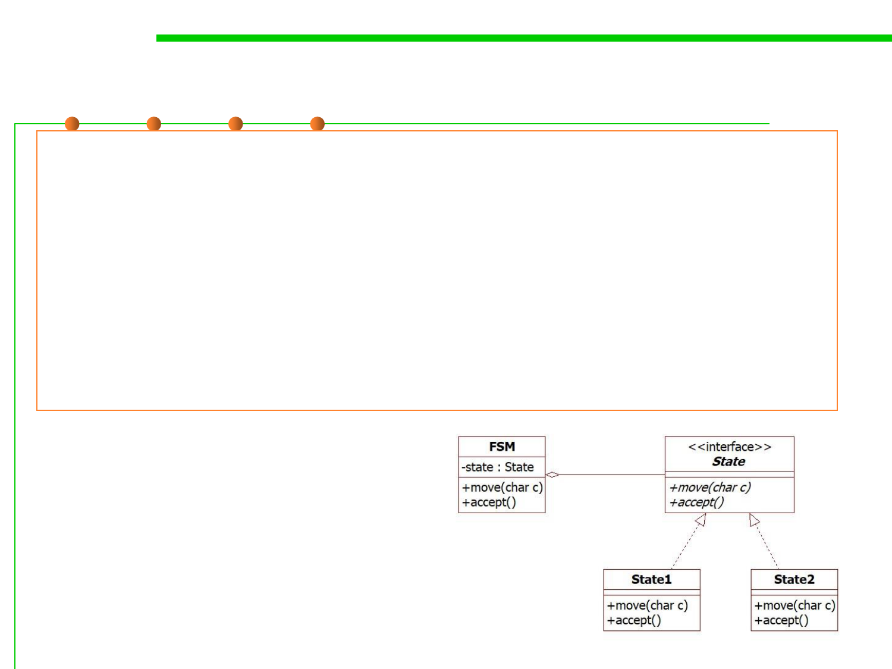
6.3 Maintainability-Oriented Construction Techniques
Example – Finite State Machine
public class Client {
public static void main(String[] args) {
FSM fsm =new FSM(State1.instance); //start with state1
fsm.move('a'); //change to state2
fsm.move('a'); //change to state1
fsm.move('b'); //change to state1
fsm.move('b'); //change to state1
….
}
}

State pattern notes
6.3 Maintainability-Oriented Construction Techniques
▪ Can use singletons for instances of each state class
– State objects don’t encapsulate state, so can be shared
▪ Easy to add new states
– New states can extend other states
• Override only selected functions
class State1 implements State {
static State1 instance = new State1();
private State1() {};
public State move (char c) {
switch (c) {
case 'a': return State2.instance;
case 'b': return State1.instance;
default: throw new
IllegalArgumentException();
}
}
public boolean accept() {return false;}
}

Software Construction
(3) Memento Pattern
备忘录模式
Memento Pattern
6.3 Maintainability-Oriented Construction Techniques
▪ Intent
– Without violating encapsulation, capture and externalize an object‘s
internal state so that the object can be returned to this state later.在不破坏
封装性的前提下，捕获一个对象的内部状态，并在该对象之外保存这个状
态。需要的时候，可以恢复到保存的状态。
– A magic cookie that encapsulates a "check point" capability.
– Promote undo or rollback to full object status.
▪ Problem to solve
– Need to restore an object back to its previous state (e.g. “undo” or
“rollback” operations). 需要恢复对象到之前的状态
Memento Pattern
6.3 Maintainability-Oriented Construction Techniques
▪ Memento design pattern defines three distinct roles:
– Originator原发器 - the object that knows how to save itself.
• creates a memento containing a snapshot of its current internal state. 创建备忘录
• uses the memento to restore its internal state. 利用备忘录恢复状态
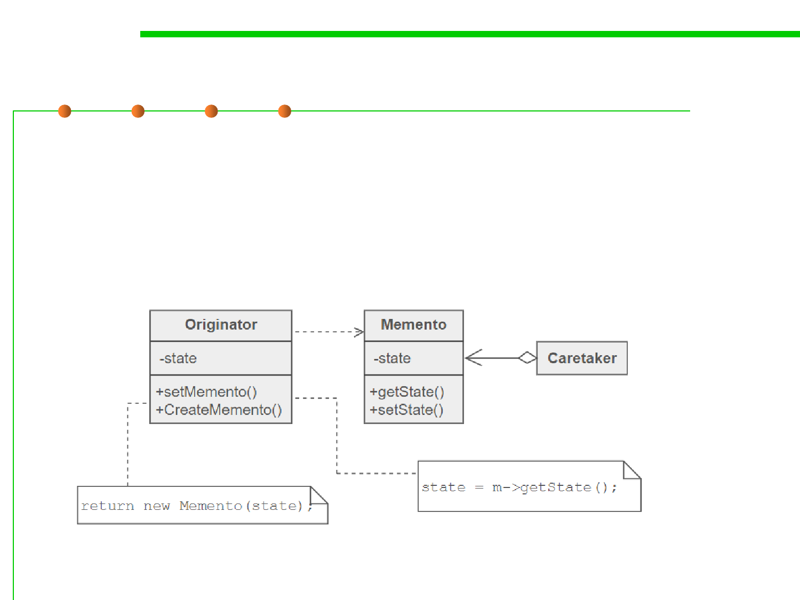
Memento Pattern
6.3 Maintainability-Oriented Construction Techniques
▪ Memento design pattern defines three distinct roles:
– Memento 备忘录- the lock box that is written and read by the Originator,
and shepherded by the Caretaker.
• stores internal state of the Originator object.
• protects against access by objects other than the originator.
Memento Pattern
6.3 Maintainability-Oriented Construction Techniques
▪ Memento design pattern defines three distinct roles:
– Caretaker 负责人- the object that knows why and when the Originator
needs to save and restore itself. 决定何时通过originator存储和恢复状态
• is responsible for the memento's safekeeping.
• never operates on or examines the contents of a memento.

6.3 Maintainability-Oriented Construction Techniques
Memento Pattern
class Memento {
private String state;
public Memento(String state) {
this.state = state;
}
public String getState() {
return state;
}
}
class Originator {
private String state;
public void setState(String state) {
System.out.println("Originator: Setting state to " + state);
this.state = state;
}
public Memento save() {
System.out.println("Originator: Saving to Memento.");
return new Memento(state);
}
public void restore(Memento m) {
state = m.getState();
System.out.println("Originator: State after restoring from Memento: " + state);
}
}

6.3 Maintainability-Oriented Construction Techniques
Memento Pattern
class Caretaker {
private List<Memento> mementos
= new ArrayList<>();
public void addMemento(Memento m) {
mementos.add(m);
}
public Memento getMemento(int m) {
return mementos.get(m);
}
}
The result：
Originator: Setting state to State1
Originator: Setting state to State2
Originator: Saving to Memento.
Originator: Setting state to State3
Originator: Saving to Memento.
Originator: Setting state to State4
Originator: State after restoring from
Memento: State3
public class Demonstration {
public static void main(String[] args) {
Caretaker caretaker = new Caretaker();
Originator originator = new Originator();
originator.setState("State1");
originator.setState("State2");
caretaker.addMemento( originator.save() );
originator.setState("State3");
caretaker.addMemento( originator.save() );
originator.setState("State4");
originator.restore( caretaker.getMemento(1));
}
}

Software Construction
3 Table-driven construction

6.3 Maintainability-Oriented Construction Techniques
What is “Table-Driven”?
▪ A table-driven method is a schema that uses tables to look up
information rather than using logic statements (such as if and
case). 使用表来查询信息而不是使用复杂逻辑语句的模式
▪ In simple cases, it's quicker and easier to use logic statements, but
as the logic chain becomes more complex, table-driven code:
– Simpler than complicated logic 更加简单
– Easier to modify 易于维护
– More efficient 更加高效
An example
6.3 Maintainability-Oriented Construction Techniques
▪ Suppose you wanted to classify characters into letters, punctuation
marks, and digits; you might use a complicated chain of logic:
if ( ( ( 'a' <= inputChar ) && ( inputChar <= 'z' ) ) ||
( ( 'A' <= inputChar ) && ( inputChar <= 'Z' ) ) ) {
charType = CharacterType.Letter;
}
else if ( ( inputChar == ' ' ) || ( inputChar == ',' ) ||
( inputChar == '.' ) || ( inputChar == '!' ) || ( inputChar == '(' ) ||
( inputChar == ')' ) || ( inputChar == ':' ) || ( inputChar == ';' ) ||
( inputChar == '?' ) || ( inputChar == '-' ) ) {
charType = CharacterType.Punctuation;
}
else if ( ( '0' <= inputChar ) && ( inputChar <= '9' ) ) {
charType = CharacterType.Digit;
}
▪ If you used a lookup table instead, you'd store the type of each
character in an array that's accessed by character code. The
complicated code fragment just shown would be replaced by this:
charType = charTypeTable[ inputChar ];

6.3 Maintainability-Oriented Construction Techniques
Insurance Rates Example
if ( gender == Gender.Female ) {
if (maritalStatus ==
MaritalStatus.Single){
if (smokingStatus ==
SmokingStatus.NonSmoking) {
if ( age < 18 ) {
rate = 200.00;
}
else if ( age == 18 ) {
rate = 250.00;
}
else if ( age == 19 ) {
rate = 300.00;
}
...
else if ( 65 < age ) {
rate = 450.00;
}
else {
if ( age < 18 ) {
rate = 250.00;
}
else if ( age == 18 ) {
rate = 300.00;
}
else if ( age == 19 ) {
rate = 350.00;
}
...
else if ( 65 < age ) {
rate = 575.00;
}
}
else if (maritalStatus ==
MaritalStatus.Married)
...
}

6.3 Maintainability-Oriented Construction Techniques
Insurance Rates Example
enum SmokingStatus {
SmokingStatus_First = 0,
SmokingStatus_Smoking = 0,
SmokingStatus_NonSmoking = 1,
SmokingStatus_Last = 1
}
enum Gender {
Gender_First = 0,
Gender_Male = 0,
Gender_Female = 1,
Gender_Last = 1,
}
enum MaritalStatus {
MaritalStatus_First = 0,
MaritalStatus_Single = 0,
MaritalStatus_Married = 1,
MaritalStatus_Last = 1
}
#define MAX_AGE = 125
Double rateTable = [
SmokingStatus_Last, Gender_Last,
MaritalStatus_Last, MAX_AGE ]
rate = rateTable(smokingStatus, gender, maritalStatus, age)
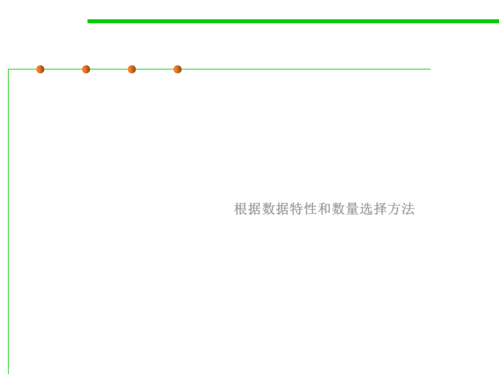
6.3 Maintainability-Oriented Construction Techniques
Methods of looking things up
• 1. Direct Access Table
• 2. Indexed Access Table
• 3. Stair-step Access
▪ Selecting one of these depends on the nature of the data, and the
size of the domain of the data. 根据数据特性和数量选择方法
6.3 Maintainability-Oriented Construction Techniques
(1) Direct Access Tables
▪ Simple – you just “look things up” by an index or indexes.
– Like all lookup tables, direct-access tables replace more complicated
logical control structures. They are "direct access" because you don't have
to jump through any complicated hoops to find the information you want
in the table.
int daysPerMonth[ ] = { 31, 28,
31, 30, 31, 30, 31, 31, 30, 31,
30, 31 };
days = daysPerMonth[month-1];


6.3 Maintainability-Oriented Construction Techniques
Insurance Rates Example
enum SmokingStatus {
SmokingStatus_First = 0,
SmokingStatus_Smoking = 0,
SmokingStatus_NonSmoking = 1,
SmokingStatus_Last = 1
}
enum Gender {
Gender_First = 0,
Gender_Male = 0,
Gender_Female = 1,
Gender_Last = 1,
}
enum MaritalStatus {
MaritalStatus_First = 0,
MaritalStatus_Single = 0,
MaritalStatus_Married = 1,
MaritalStatus_Last = 1
}
#define MAX_AGE = 125
Double rateTable = [
SmokingStatus_Last, Gender_Last,
MaritalStatus_Last, MAX_AGE ]
rate = rateTable(smokingStatus, gender, maritalStatus, age)
6.3 Maintainability-Oriented Construction Techniques
(2) Indexed Access Tables
▪ Sometimes direct indexing is a
problem, especially if the domain
of possible values is huge.
▪ For example what if you wanted
to use the product id (4 digits
let’s say), and make a table
mapping 200 products. 4位编号可
以有10000种组合，但具体商品只
有200个，增加映射表处理
– Lookup table: 10000(0000-9999)
– Array of Indexs: 200
6.3 Maintainability-Oriented Construction Techniques
Lookup Index vs Direct
▪ Index elements are small (integers), values can efficiently be large
(only as many as you need), such as a string (names, descriptions,
error messages, etc).
▪ Multiple indexes can access the same data (employee info can be
mapped to by name, hire date, salery, etc.)
▪ Maintainable – isolate lookup method from the application
interface. 将应用界面与查询方法分离
6.3 Maintainability-Oriented Construction Techniques
(3) Stair-Step Access Tables
▪ Entries in a table are valid for ranges of data rather than for distinct
data points
Each “step” is
a category

6.3 Maintainability-Oriented Construction Techniques
Stair-Step Access Tables
Range
≥ 90.0%
< 90.0%
< 75.0%
< 65.0%
< 50.0%
Grade
A
B
C
D
F

Grade Lookup
6.3 Maintainability-Oriented Construction Techniques
// set up data for grading table
float rangeLimit[] = { 50.0, 65.0, 75.0, 90.0, 100.0 };
String grade[] = { "F", "D", "C", "B", "A" };
int maxGradeLevel = grade.length – 1;
...
// assign a grade to a student based on the student's score
int gradeLevel = 0;
string studentGrade = "A" ;
while (( studentGrade == "A" ) && ( gradeLevel < maxGradeLevel )) {
if ( studentScore < rangeLimit[ gradeLevel ] ) {
studentGrade = grade[ gradeLevel ];
}
gradeLevel = gradeLevel + 1;
}
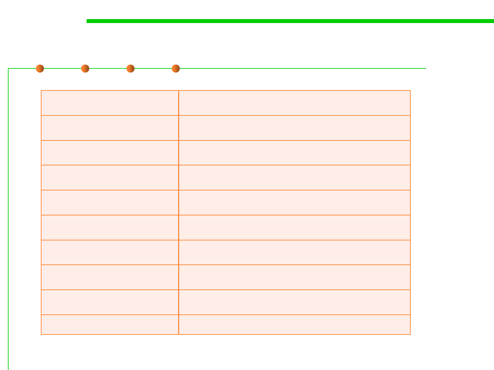
6.3 Maintainability-Oriented Construction Techniques
Statistics – Irregular Data
Probability
0.458747
0.547651
0.627764
0.776883
0.893211
0.957665
0.976544
0.987889
…
Insurance Claim Amount
$0.00
$254.32
$514.77
$747.82
$1,042.65
$5,887.55
$12,836.98
$27,234.12
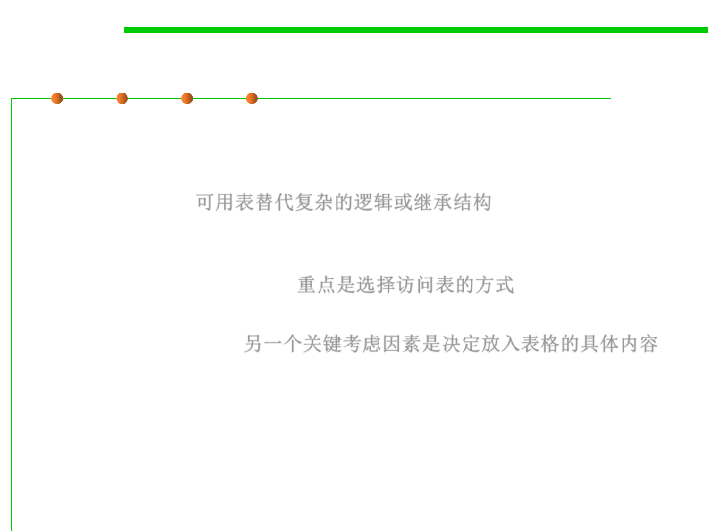 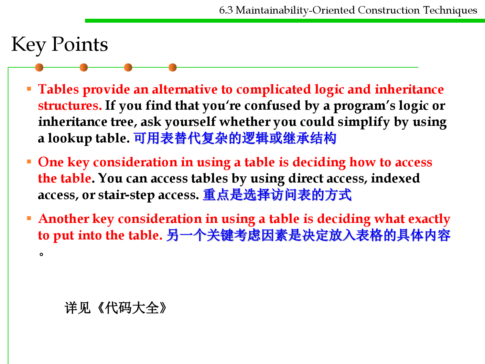
Key Points
6.3 Maintainability-Oriented Construction Techniques
▪ Tables provide an alternative to complicated logic and inheritance
structures. If you find that you‘re confused by a program’s logic or
inheritance tree, ask yourself whether you could simplify by using
a lookup table. 可用表替代复杂的逻辑或继承结构
▪ One key consideration in using a table is deciding how to access
the table. You can access tables by using direct access, indexed
access, or stair-step access. 重点是选择访问表的方式
▪ Another key consideration in using a table is deciding what exactly
to put into the table. 另一个关键考虑因素是决定放入表格的具体内容
。
详见《代码大全》


Software Construction
Summary

Software Construction
The end
April 22, 2019